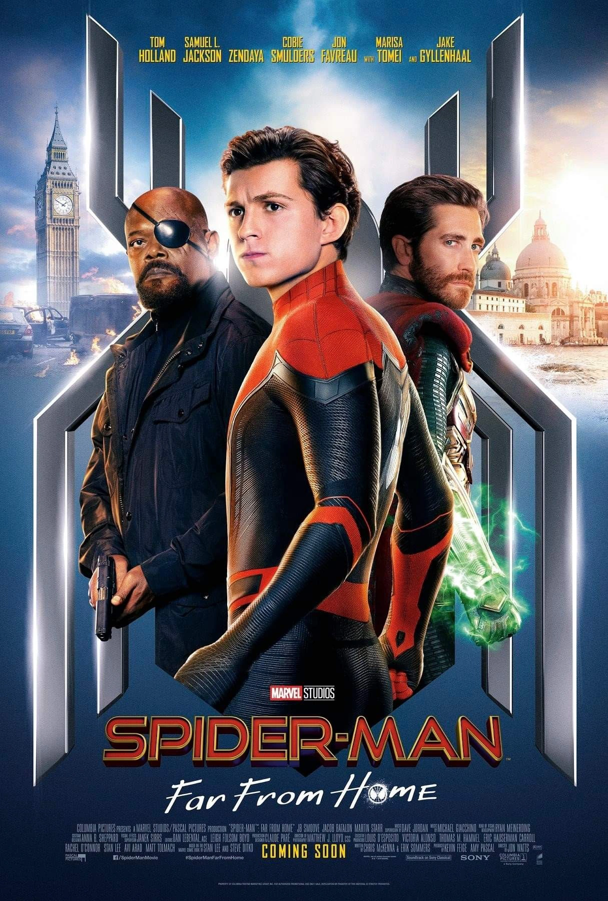

Spiderman:Homecoming
En esta película se nos presenta a un joven Peter Parker que está en el instituto y que tiene que compaginar su vida como superhéroe con su vida como estudiante.

Spiderman:Far From Home
En esta película Peter Parker se va de viaje con sus compañeros de clase a Europa, pero su viaje se ve interrumpido por la aparición de Mysterio, un villano que quiere destruir el mundo.
Spiderman:No Way Home
Esta versión extendida cuenta con más de 11 minutos contenido extra, incluyendo escenas eliminadas.Por primera vez en la historia cinematográfica de Spider-Man, nuestro héroe, vecino y amigo es desenmascarado y por tanto ya no es capaz de separar su vida normal de los enormes riesgos que conlleva ser un Súper Héroe. Cuando pide ayuda a Doctor Strange, los riesgos pasan a ser aún más peligrosos, obligándole a descubrir lo que realmente significa ser Spider-Man.